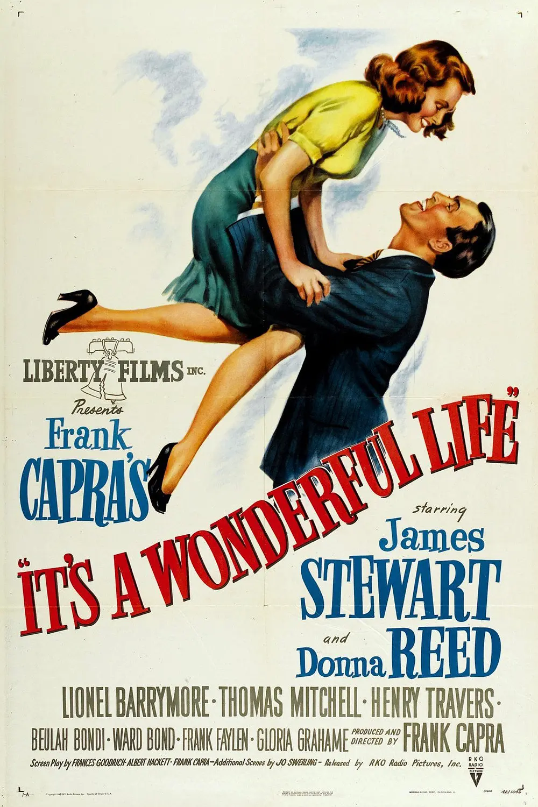

《生活多美好》是弗兰克·卡普拉执导，弗朗西丝·古德里奇、艾伯特·哈克特、弗兰克·卡普拉等编剧 ，詹姆斯·史都华、唐娜·里德、莱昂纳尔·巴里摩尔主演的奇幻喜剧电影，于1946年12月20日在美国纽约上映 。该片根据菲利普·范·多伦·斯特恩的短篇小说《最好的礼物》改编，讲述了主人公乔治在圣诞夜丧失了对生活的信心，准备自杀，上帝派来的天使帮他渡过危机，重新鼓起了生活的勇气的故事。2004年，该片在BBC评选的“未获奥斯卡奖的最佳影片”中名列第二。2006年，该片被美国电影学会评选为“百年百部励志电影”榜首 ；同年，在《首映杂志》评选的“影史最伟大的100次表演”榜单中，詹姆斯·史都华凭借在该片中的表演名列第八。在美国电影学会评选的“影史最有力的影片”榜单中，该片名列第一 。